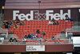
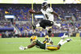

Pro Football News
The Latest: Packers optimistic but wary for fans at Lambeau
2 minutes ago
Sponsor FedEx asks Redskins to change their name
14 hrs ago

The Latest: USL's Indy Eleven to return with limited fans
15 hrs ago
Fewer preseason games is another challenge for NFL coaches
15 hrs ago
AP Source: NFL to play Black anthem before national anthem
16 hrs ago

AP Source: NFL cutting preseason in half, pushing back start
Jul. 01, 2020 09:00 PM EDT
The Latest: Oklahoma athletics cutting $13.7M from budget
Jul. 02, 2020 12:43 AM EDT
DAYS
:
HOURS
:
MINs
:
SECs
Advertisement